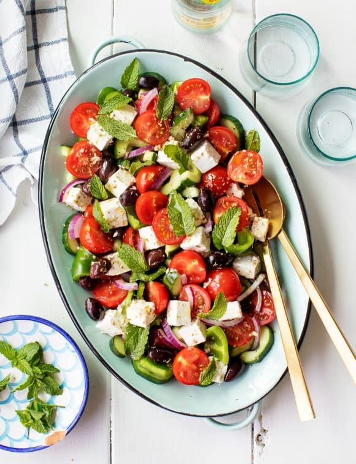

Greek Salad

Description
This easy Greek salad recipe is a flavorful, refreshing summer side dish!
If you make it ahead for a gathering, save a few mint leaves to add right
before serving.
Ingredients
Dressing
- ¼ cup extra-virgin olive oil
- 3 tablespoons red wine vinegar
- 1 garlic clove, minced
- ½ teaspoon dried oregano, more for sprinkling
- ¼ teaspoon Dijon mustard
- ¼ teaspoon sea salt
- Freshly ground black pepper
For the salad
-
1 English cucumber, cut lengthwise, seeded, and sliced ¼-inch thick
- 1 green bell pepper, chopped into 1-inch pieces
- 2 cups halved cherry tomatoes
- 5 ounces feta cheese, cut into ½ inch cubes*
- ⅓ cup thinly sliced red onion
- ⅓ cup pitted Kalamata olives
- ⅓ cup fresh mint leaves
Steps
-
Make the dressing: In a small bowl, whisk together the olive oil,
vinegar, garlic, oregano, mustard, salt, and several grinds of pepper.
-
On a large platter, arrange the cucumber, green pepper, cherry tomatoes,
feta cheese, red onions, and olives. Drizzle with the dressing and very
gently toss. Sprinkle with a few generous pinches of oregano and top
with the mint leaves. Season to taste and serve.
Notes
*Feta in brine is best for this recipe.
All credits go to
Love & Lemons.
Return to main menu